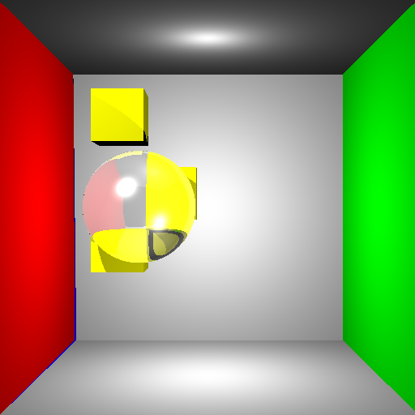
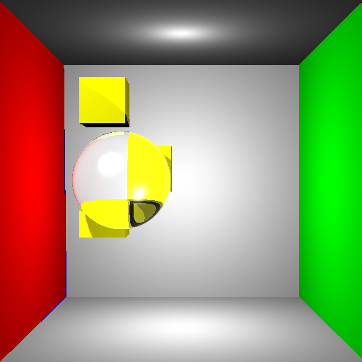
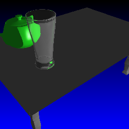

Objective 11:
Fresnel Reflectance
Since I wanted some super awesome glass reflection, I decided that I needed to implement Fresnel Reflectance instead of using standard Reflection and Refraction in my Final Scene. This was achieved by using the simplification of the Fresnel terms by assuming that all light is unpolarized.
 Non-Fresnel - standard reflection and refraction on the same object  Fresnel Reflectance. Note that the maximum reflection occurs only on the edges of the object.  Glass scene with standard reflection and refraction
Glass scene with Fresnel Reflectance. Note the reflection is maximum at the edges of the glass |

Written by: Mike Jutan
CS 488 - Computer Graphics
University of Waterloo